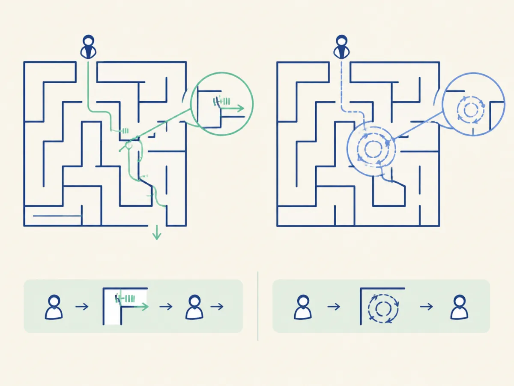
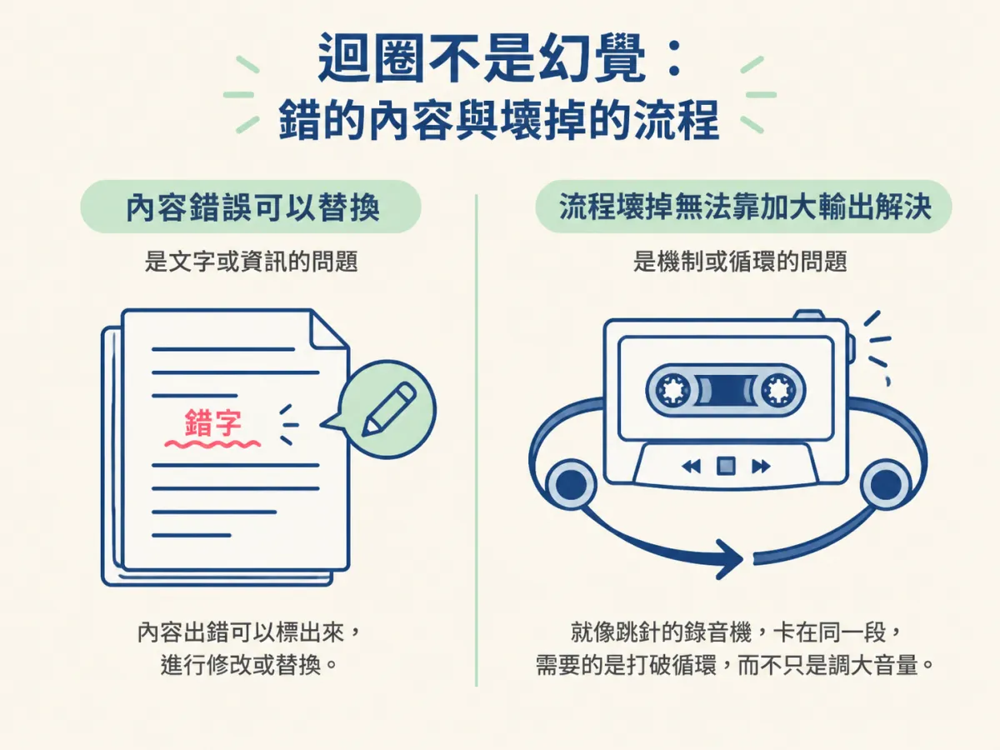
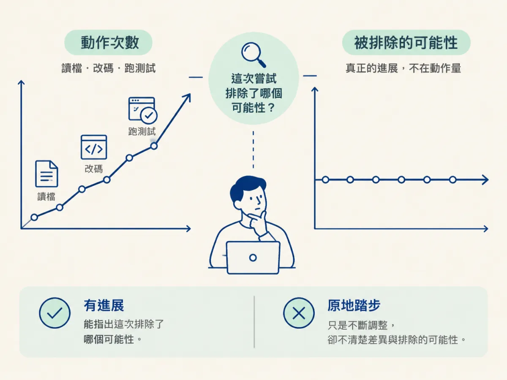

能用「重複而沒有進展」認出 agent 卡在迴圈，並說出為什麼這種情況繼續加指示只會更糟。
你請 agent 修一個失敗的測試。它改了 service，跑測試，失敗。它改回來，換個寫法，再失敗。第三次它說「我找到問題了」，於是把同一個函式又重寫一遍，跟前兩次幾乎一樣。
你已經盯著螢幕四十分鐘。它回你的每一則訊息都很有自信，diff 卻越來越亂。你想說「好，那你再試一次」，又覺得哪裡怪怪的，因為你說不出它到底離答案更近還是更遠。
這一節處理的不是你的程式碼，是這個 session。先能認出它，後面的判斷與救援才有意義。而認出的關鍵，不是「它有沒有在動」，是「它有沒有前進」。
來源用一句話定義這種狀態：repetition without progress。它會用幾種很具體的樣子出現：
這四個徵兆表面上不一樣，其實是同一件事：動作很多，狀態沒有往前。你可以把它想成一個人在迷宮裡走。如果每條走過的路都在牆上留下記號，第二次走到同一個路口時他會知道要換方向；但如果他每次走到同一個路口都覺得「這次往左試試看」，他會一直在那一小塊區域打轉。

你要觀察的就是這件事：上一次嘗試排除了什麼？如果答不出來，那不管它改了幾行、跑了幾次測試，都只是原地。
這兩件事很容易混在一起，但它們要的處理方式完全不同。
幻覺給你的是錯的內容：它說某個函式存在，其實不存在；它引用一段你沒寫過的程式。內容錯了，你可以指出錯在哪、要求它換掉，對話本身還是能運作。
迴圈給你的是壞掉的流程：它給你的每一則回覆可能都合理，甚至每一次修改都對應你當下的要求，但整個過程已經失去方向。問題不在某一則訊息，在於產生訊息的那個機制。
這個差別，決定了你該不該繼續下指令。內容錯，換掉內容就好；流程壞，你丟進去的東西會被同一個壞掉的流程吃掉。
A hallucination gives you wrong content. A loop gives you a broken process. Adding instructions makes a loop worse, because the thing you're instructing is part of the failure.
打個比方：一台跳針的錄音機。你聽到的不是它唱錯，是它卡在同一段。這時候你把音量調大沒有用，因為問題不在音量，在播放的機制。這個類比有一個地方不能照搬：agent 不是機械故障，它通常是繞著一個錯誤的假設轉。所以有些時候，一句對的問話就能把它拉出來。但那不會是「你再試一次」這種指示。

人在卡住的時候，直覺是補更多資訊：把需求講得更細、把錯誤貼上去、告訴它「這次請認真看」。這個直覺在正常對話裡有效，在這裡卻常常反效果。
原因是：你正在指揮的東西，本身就是故障的一部分。你的新指示會進到同一個 context，被同一個錯誤假設解讀。
看一個具體的例子。假設 agent 已經認定「token 一定存在 cookie 裡」，於是它每次修不好，就再去 cookie 裡找一次。這時候你輸入「再檢查一次認證流程，剛剛還是失敗」，它會做什麼？它會從 cookie 的角度再檢查一次，而且更用力。你的指示沒有帶來新資訊，只是讓它在同一個框架裡多跑一圈。
這也是為什麼後面五步升級的第一步是「停」，而不是「補充說明」。你必須先讓那個流程停下來，才有機會換掉它依賴的假設。
Agent 的輸出天生看起來很忙碌：它在讀檔、在改 code、在跑測試。這些動作會給你一種「它有在做事」的感覺，但動作的數量跟進展無關。
判準只有一個：這次嘗試之後，有沒有哪個可能性被排除了？
如果它說「我改成用 await 試試看」，而你能指出「好，這排除了 callback 時序的問題」，那是有進展，即使測試還是失敗。如果它說「我再調整一下錯誤處理」，而你完全不知道這次跟上次差在哪、排除了什麼，那就是原地。

還有一個更隱蔽的版本：它開始跟你先前確認過的決定矛盾。前面你們已經確定不改成非同步，現在它又繞回去改。這不是它「改變想法」，是它已經丟掉了那段共識。那通常代表 context 的狀態已經不適合繼續推進了。
很多人一發現「它在打轉」，第一個反應是找一個更強的命令：重來、清除、換模型。但指令的選擇，取決於一個更前面的問題：這個 session 到目前為止累積的東西，對下一步還有沒有用？
如果它其實已經幫你收集了不少有價值的事實，只是開始繞圈，那你會想保留那些事實。如果它整段都是失敗的嘗試與重複的假設，那留著只會拖累下一個開始。
這個判斷只有兩個答案，選錯邊的代價卻不對稱。下一節專門講它。
迴圈的訊號是重複而沒有進展：同一個函式反覆重寫、同樣的檔案反覆打開、diff 越來越亂、跟自己先前的決定矛盾。幻覺給你錯的內容，迴圈給你壞掉的流程；內容錯可以換掉，流程壞會把你後續的指示也吃掉，所以加指示只會更糟。判斷有沒有進展，只看一件事：這次嘗試排除了哪個可能性。認出之後，先別選指令，先判斷這個 context 還值不值得留。
判斷之前，還有一個很實際的問題要先回答：你手上這個 session，裡面裝的到底是資產還是負債？